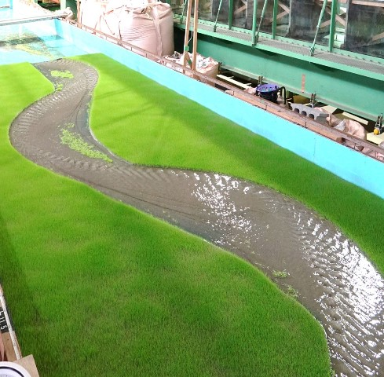
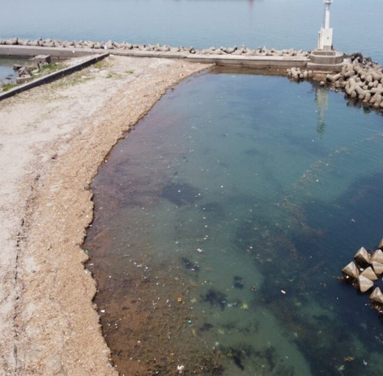
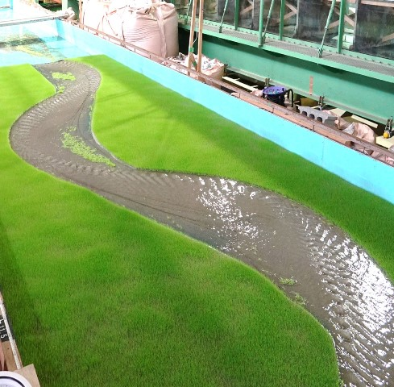
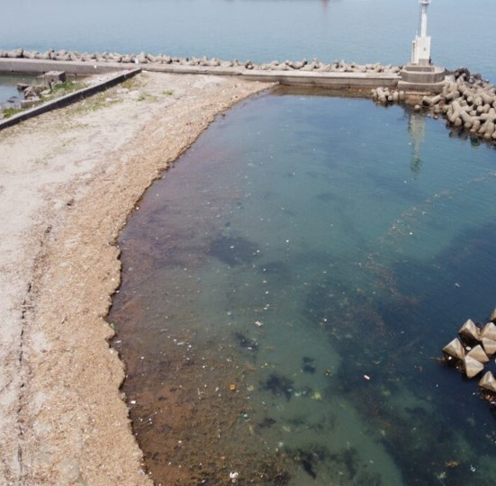

近年，全国各地で豪雨等に伴う水害や土砂災害が発生し，甚大な被害が生じています。当研究室では，このような降雨時における土砂の移動を伴う河床・流路変動特性や土砂災害発生プロセスを解明すると共に，
適切な河道内樹木管理，治水と流域環境とのバランスをとる方法などについて研究を行います。
河川地形の成り立ち，治水と防災，河川環境等の課題について，とくに流れ・河床変動の視点からこれらを調べてみたいと思う，やる気のある学生の皆さんを歓迎します。
河川工学（River Engineering）, 土砂水理学（Sediment Hydraulics）, 環境水理学（Ecohydraulics）
 


